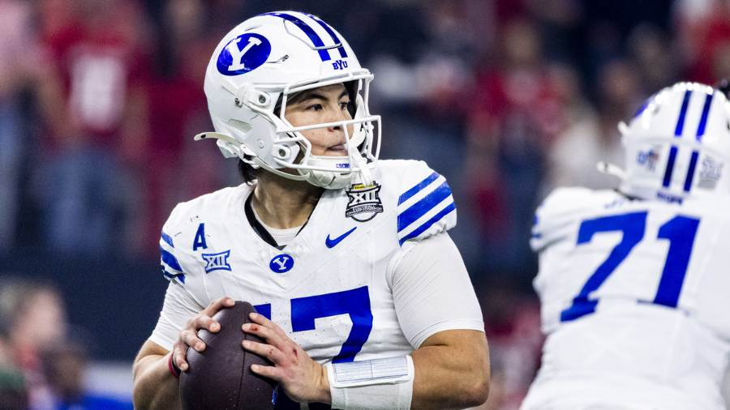

Why BYU should've made the College Football playoff

What happened?
The BYU cougars were unfairly not selected for the college football playoff this weekend. This was a huge mistake by the committee and even contradicted many of the commments that they had made previously about the selection process. They repeatedly said, "Conference championship games won't be used against teams seeking to get into the playoffs." But during the selection show, they said that BYU didn't get in because it lost it's championship game to Texas Tech. But Alabama lost just as bad to Georgia in their title game and had more losses than BYU did and still got in. This isn't just conjecture, the numbers back it up as well.
Tale of the Tape
These stats show the comparison between BYU and two others selected for the college football playoff.